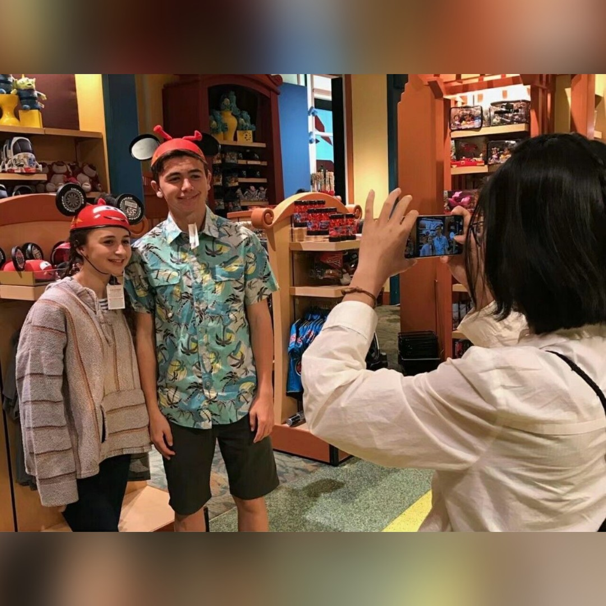
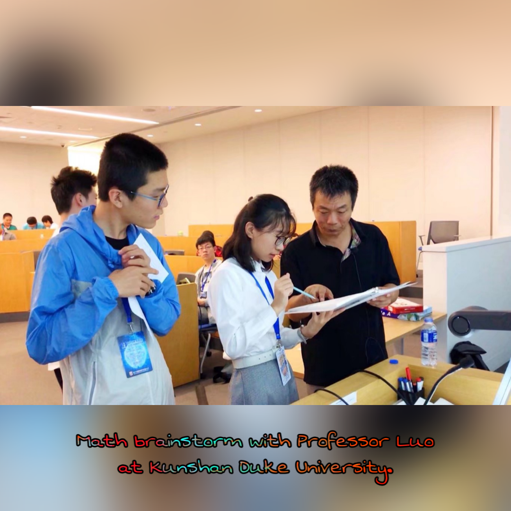

About: Kexin Ju Home: Phyllis
Home: Phyllis
General
I am Kexin (Phyllis) Ju from Xi'an Gaoxin No.1 High School International Course Center and will be a senior-three student this September.
-- So far I have finished 7 AP exams(Calculus BC, Computer Science A, Biology, Microeconomics, Physics 1, Physics 2, and Chemistry) and the SAT2 exam (Mathematics Level 2, Physics, Chemistry), planning to apply to American universities at the end of 2019.
As a music lover, my favorite activities in my leisure time are singing and playing the piano.
-- I dig ballads, jazz, and musical dramas very much.
-- At the first year of my high school, I established a music band called SPA (Sparkling, Perfect, Awesome).
-- This summer I am preparing a short musical drama of La La Land for a charity concert in my community.
-- I have directed and acted in many plays since primary school. During my three-month exchange exprience in Saugus High School, located in Santa Clarita, I chose Theater Art and Choir as two interest courses.
-- Besides performances, I also completed The Art of Music Production course offered by Berklee Music College on Coursera in May, 2019.
As a music lover, my favorite activities in my leisure time are singing and playing the piano.
-- I dig ballads, jazz, and musical dramas very much.
-- At the first year of my high school, I established a music band called SPA (Sparkling, Perfect, Awesome).
-- This summer I am preparing a short musical drama of La La Land for a charity concert in my community.
-- I have directed and acted in many plays since primary school. During my three-month exchange exprience in Saugus High School, located in Santa Clarita, I chose Theater Art and Choir as two interest courses.
-- Besides performances, I also completed The Art of Music Production course offered by Berklee Music College on Coursera in May, 2019.
In addition, I am a sensitive girl who has various emotion and thoughts about the world.
-- I begin to shoot vlogs this year in order to satisfy my desire to record important life moments in 2019, a special and significant year. I am afraid that with time elapses, some memories will eventually fade. In this way, I can transfer those unforgettable "instant lights" into an everlasting form that after many years, when I look back to them, those corners of my past memories can still be inmediately and properly recalled.
-- Sometimes I love creating new programs on my online radio station "25-hour Radio". I have been recording my voice since 5 years ago. "25-hour Radio" retains the footsteps of my personal growth.
-- Writing also helps me to collect details of my life. I usually send my articles to the newspapers, and nearly 20 articles are published.
-- I begin to shoot vlogs this year in order to satisfy my desire to record important life moments in 2019, a special and significant year. I am afraid that with time elapses, some memories will eventually fade. In this way, I can transfer those unforgettable "instant lights" into an everlasting form that after many years, when I look back to them, those corners of my past memories can still be inmediately and properly recalled.
-- Sometimes I love creating new programs on my online radio station "25-hour Radio". I have been recording my voice since 5 years ago. "25-hour Radio" retains the footsteps of my personal growth.
-- Writing also helps me to collect details of my life. I usually send my articles to the newspapers, and nearly 20 articles are published.


I discover my passion toward computer science and mathematics after entering high school.
-- By taking part in all kinds of mathematics competitions and computer science competitions, my curiosity in math is stimulated to keep accumulating. In those competitions, I gradually realize that math and computer science are not only about solving tough problems or sitting in front of a computer and staring at its screen all day and night. The journey of exploring math and computer science can also include collaboration, communication, and interaction.
-- My two friends and I form a CS learning group to try Arduino projects, and we plan to found an Arduino club next semester.
-- Currently I am working on a project that uses deep learning model to analyze images, assisting doctors to distinguish between two skin diseases.
-- Knowing that I am rigorous when solving math problems and creative when playing music, I decide to major in computer science and arts in the future, which allows me to combine both the rigid and soft aspects of computer science and use technologies to serve the development of the music industry.
-- By taking part in all kinds of mathematics competitions and computer science competitions, my curiosity in math is stimulated to keep accumulating. In those competitions, I gradually realize that math and computer science are not only about solving tough problems or sitting in front of a computer and staring at its screen all day and night. The journey of exploring math and computer science can also include collaboration, communication, and interaction.
-- My two friends and I form a CS learning group to try Arduino projects, and we plan to found an Arduino club next semester.
-- Currently I am working on a project that uses deep learning model to analyze images, assisting doctors to distinguish between two skin diseases.
-- Knowing that I am rigorous when solving math problems and creative when playing music, I decide to major in computer science and arts in the future, which allows me to combine both the rigid and soft aspects of computer science and use technologies to serve the development of the music industry.

Phyllis' Resume